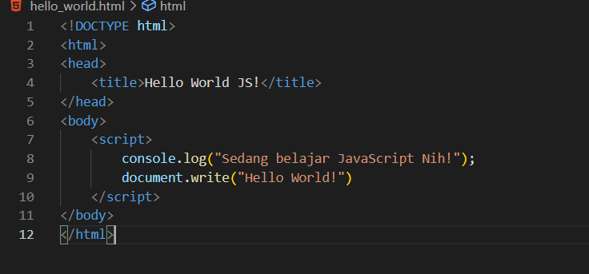

JavaScript
JavaScript — мультипарадигменный язык программирования. Поддерживает объектно-ориентированный, императивный и функциональный стили.
Области, в которых используется JavaScript:
Фронтенд веб-приложений. С помощью JavaScript создают внешний интерфейс программ, которые запускаются в браузере. К ним относятся почтовые клиенты, редакторы текста, социальные сети, видеохостинги и многое другое.
Бэкенд веб-приложений. Это серверная часть приложения, в которой обычно хранятся базы данных. Для создания бэкенд-части на JavaScript обычно используется движок Node.js.
Расширения для браузеров. Это мини-программы, которые состоят из кода, исполняющегося в браузере. Расширения помогают блокировать рекламу, скачивать видео или подсчитывать время, проведённое в интернете.
Мобильная разработка. На JavaScript можно писать кроссплатформенные приложения, используя фреймворки React Native, Ionic, Cordova или PhoneGap.
Игры.На JavaScript можно создавать как простые игры, так и многопользовательские на стороне сервера.
Машинное обучение. Чаще всего в машинном обучении используют другие языки программирования, например Python. Однако иногда для этого применяют и JavaScript.
Интернет вещей (IoT). Для устройств, подключённых к одной сети (умные часы, фитнес-трекеры, пожарная сигнализация), пишут программы на JavaScript с использованием фреймворков Cylon.js и Johnny-Five.
